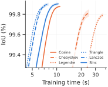
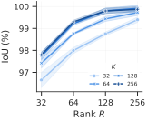
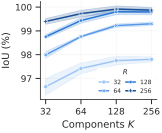
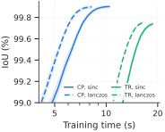

Ablations¶
FUTON's four design choices, varied one at a time on the occupancy task (five Stanford shapes at \(256^3\), 2000 epochs, learning rate 1e-2), plus two supplementary studies on images and radiance fields. Unless stated, the default model is the benchmark's: 128 components per axis, CP rank 218, a one-layer MLP decoder, 131,673 parameters. The configs are in configs/ablation-futon/, and every table and plot here is in results/ablation/.
Basis¶
All six families at the default size. The number of parameters does not depend on the basis, so the columns are what each family costs and what it buys.
| Basis | Orthogonal | Support | Smoothness | Train time (s) ↓ | IoU (%) ↑ |
|---|---|---|---|---|---|
| Cosine | yes | global | \(C^\infty\) | 11.0 | 99.88 ± 0.01 |
| Chebyshev | weighted | global | \(C^\infty\) | 25.1 | 99.81 ± 0.04 |
| Legendre | yes | global | \(C^\infty\) | 37.3 | 99.79 ± 0.02 |
| Triangle | no | compact | \(C^0\) | 7.2 | 99.88 ± 0.01 |
| Lanczos | no | compact | \(C^1\) | 7.9 | 99.90 ± 0.01 |
| Sinc | no | global | \(C^\infty\) | 10.4 | 99.90 ± 0.01 |

The choice of family barely moves the final accuracy on the grid: every basis is within 0.1 IoU points, and the cardinal ones (sinc, Lanczos, triangle) are the best. It moves the training time by 5×. The cosine and sinc bases are tabulated on the grid (grid_size=256); the polynomial families are evaluated at every step by a sequential three-term recurrence, which is what makes them slow; and the local ones are fast because a coordinate touches two (triangle) or six (Lanczos-3) functions per axis, which the fused sparse kernels exploit. Lanczos is the sweet spot: sinc's accuracy at triangle's cost.
Components against rank¶
The two sizes of a FUTON, the number of basis functions per axis \(K\) and the CP rank \(R\), both over {32, 64, 128, 256}, for the sinc basis (components_rank.yaml; the Lanczos results are in results/ablation/ and match).


Mean IoU (%) over the five shapes for the sinc basis (the Lanczos numbers are within 0.1 points of every cell):
| \(K\) \ \(R\) | 32 | 64 | 128 | 256 |
|---|---|---|---|---|
| 32 | 96.65 | 97.99 | 98.76 | 99.40 |
| 64 | 97.42 | 98.76 | 99.43 | 99.73 |
| 128 | 97.75 | 99.22 | 99.80 | 99.92 |
| 256 | 97.80 | 99.30 | 99.80 | 99.87 |
Rank is the lever. At every \(K\), each doubling of \(R\) raises the IoU, by 0.6 to 1.3 points at the low end and still by 0.1 at the top. Components saturate: from \(K = 128\) to \(K = 256\) nothing is gained at any rank, because the MLP decoder makes up for the missing bandwidth, and at \(K = 32\) the basis is too coarse for any rank to fix. This is why the benchmark models spend their budget on \(R\): 218 at \(K = 128\) rather than 144 at \(K = 256\), which was 0.1 points worse at the same size.
Combiner¶
A tensor-ring combiner against the CP one, at \(K = 128\), for both bases. A ring of rank \(r\) has the size of a CP combiner of rank \(r^2\); rank 15 (137,476 parameters) is the closest match to the CP model (131,673).
| Combiner, decoder | Params (k) | FUTON-sinc time (s) ↓ | FUTON-sinc IoU (%) ↑ | FUTON-lanczos time (s) ↓ | FUTON-lanczos IoU (%) ↑ |
|---|---|---|---|---|---|
| CP, MLP | 131.7 | 10.4 | 99.90 ± 0.01 | 7.9 | 99.90 ± 0.01 |
| TR, MLP | 137.5 | 18.7 | 99.74 ± 0.02 | 16.6 | 99.75 ± 0.01 |

CP wins on both counts: 0.15 IoU points and half the training time. The ring's \(r \times r\) matrices per point cost more to contract than CP's \(R\) products, and its output is only \(r^2 = 225\) wide, which the decoder then has to close.
Decoder¶
The paper's model has a linear decoder, which makes FUTON exactly a rank-\(R\) CP model of the signal; the benchmarks use a one-layer MLP. Two supplementary studies measure the difference at equal size.
Volumes (five shapes, from logs/decoder-local). The MLP decoder holds 47,961 parameters, which a linear decoder returns to the combiner as CP rank 342; rank 218 with a linear decoder isolates the nonlinearity from the parameters.
| Decoder | CP rank | Params (k) | FUTON-sinc IoU (%) | FUTON-lanczos IoU (%) |
|---|---|---|---|---|
| MLP, 1 hidden layer | 218 | 131.7 | 99.90 | 99.90 |
| linear | 342 | 131.7 | 99.93 | 99.94 |
| linear | 218 | 83.9 | 99.86 | 99.87 |
Images (kodim01, 09, 13 and 19, from logs/decoder-image-kr). Here the linear decoder is walked along the iso-parameter curve, from a quarter of the sampling resolution per axis at rank 602 to the full resolution at rank 152, all at about 194.5k parameters; an MLP at the full resolution is the control.
| Decoder | Components per axis | CP rank | FUTON-sinc PSNR (dB) | FUTON-lanczos PSNR (dB) |
|---|---|---|---|---|
| MLP, 1 hidden layer | H/2, W/2 | 224 | 37.05 | 36.86 |
| MLP, 1 hidden layer | H, W | 137 | 36.07 | 36.06 |
| linear | H/4, W/4 | 602 | 23.82 | 23.72 |
| linear | H/2, W/2 | 302 | 28.17 | 27.91 |
| linear | 3H/4, 3W/4 | 202 | 31.72 | 31.59 |
| linear | H, W | 152 | 31.77 | 31.77 |
The two tasks disagree, and both make sense. An occupancy volume is nearly a low-rank tensor in a smooth basis, so at equal size the linear model's extra rank is worth more than the nonlinearity. A natural image is not: a rank-152 CP model of a \(512 \times 768\) image tops out near 32 dB however the budget is split, and the one-layer MLP adds 5 dB on top of it. The MLP decoder is therefore the default, and the linear decoder remains the model to reason about.
Radiance fields (lego, from logs/nerf-kr): the image study's question, asked once of a radiance field. Doubling the components to \(K = 256\) at the rank that pays for it (\(R = 78\), 73,733 parameters) loses 0.7 dB against the benchmark's \(K = 128\), \(R = 128\) (31.05 dB), the same answer as on volumes: the rank is where the budget belongs.